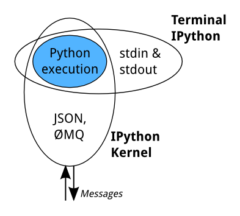

Contents
This section focuses on IPython and Jupyter notebook and how they interact.
When we discuss IPython, we talk about two fundamental roles:
Jupyter Notebook and its flexible interface extends the notebook beyond code to visualization, multimedia, collaboration, and more.
When you type ipython, you get the original IPython interface, running in
the terminal. It does something like this:
while True:
code = input(">>> ")
exec(code)
Of course, it's much more complex, because it has to deal with multi-line
code, tab completion using readline, magic commands, and so on. But the
model is like code example: prompt the user for some code, and when they've
entered it, execute it in the same process. This model is often called a
REPL, or Read-Eval-Print-Loop.
All the other interfaces —- the Notebook, the Qt console, ipython console
in the terminal, and third party interfaces —- use the IPython Kernel. The
IPython Kernel is a separate process which is responsible for running user
code, and things like computing possible completions. Frontends, like the
notebook or the Qt console, communicate with the IPython Kernel using JSON
messages sent over ZeroMQ sockets; the protocol used
between the frontends and the IPython Kernel is described in
Messaging in Jupyter.
The core execution machinery for the kernel is shared with terminal IPython:
A kernel process can be connected to more than one frontend simultaneously. In this case, the different frontends will have access to the same variables.
This design was intended to allow easy development of different frontends based on the same kernel, but it also made it possible to support new languages in the same frontends, by developing kernels in those languages, and we are refining IPython to make that more practical.
Today, there are two ways to develop a kernel for another language. Wrapper kernels reuse the communications machinery from IPython, and implement only the core execution part. Native kernels implement execution and communications in the target language:
Wrapper kernels are easier to write quickly for languages that have good Python wrappers, like octave_kernel, or languages where it's impractical to implement the communications machinery, like bash_kernel. Native kernels are likely to be better maintained by the community using them, like IJulia or IHaskell.
The Notebook frontend does something extra. In addition to running your code,
it stores code and output, together with markdown notes, in an editable
document called a notebook. When you save it, this is sent from your browser
to the notebook server, which saves it on disk as a JSON file with a
.ipynb extension.

The notebook server, not the kernel, is responsible for saving and loading notebooks, so you can edit notebooks even if you don't have the kernel for that language—you just won't be able to run code. The kernel doesn't know anything about the notebook document: it just gets sent cells of code to execute when the user runs them.
The Nbconvert tool in Jupyter converts notebook files to other formats, such as HTML, LaTeX, or reStructuredText. This conversion goes through a series of steps:
The nbviewer website uses nbconvert with the HTML exporter. When you give it a URL, it fetches the notebook from that URL, converts it to HTML, and serves that HTML to you.
IPython also includes a parallel computing framework, IPython.parallel. This allows you to control many individual engines, which are an extended version of the IPython kernel described above.